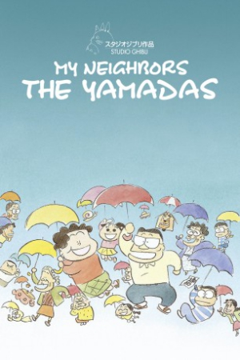

Also known as:ホーホケキョ となりの山田くん (original title)
Country:Japan, 104 minutes
Spoken languages:Japanese
Genres:Animation, Family
Director(s):Isao Takahata
Writer(s):Isao Takahata
Video Codec:Unknown
Number: 2759


Certification:PG
Storyline:
The Yamadas are a typical middle class Japanese family in urban Tokyo and this film shows us a variety of episodes of their lives. With tales that range from the humorous to the heartbreaking, we see this family cope with life's little conflicts, problems, and joys in their own way.
Cast:


Medium: Original DVD,
Comments: Part of Studio Ghibli Special Edition Collection
Loaned: No
Aspect ratio: Unknown